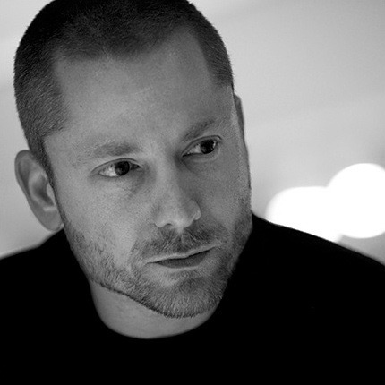
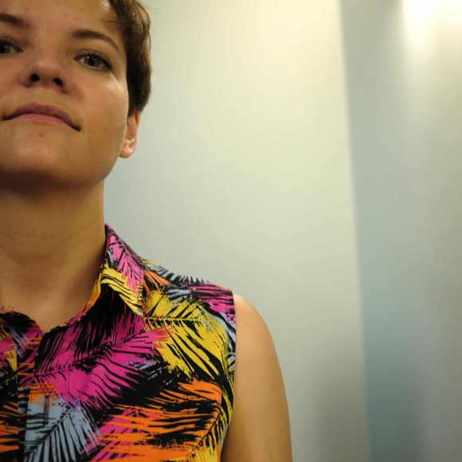
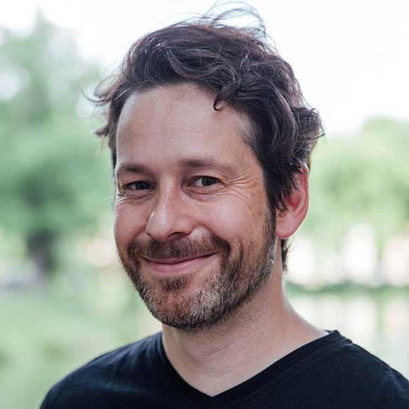
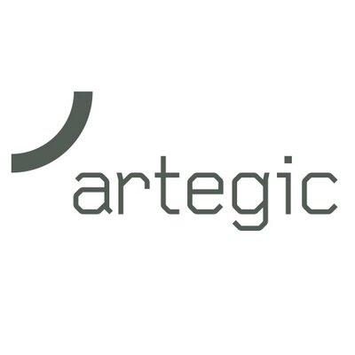
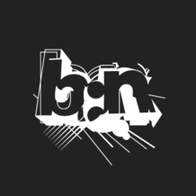
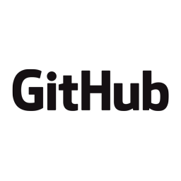

what && when && where && who && how-much > nightlybuild.io Running nightlybuild:what" task >> Inspirational after work web design & web dev conference Running "nightlybuild:when" task >> 26th September 2014, 5:30pm to midnight Running "nightlybuild:where" task >> Kölner Künstler Theater Running "nightlybuild:who" task Running test/speaker.html....OK >> Nico Hagenburger passed >> Ian Feather passed >> Jasmin Boje passed >> Steffen Süpple passed >> Aral Balkan passed >> Alice Bartlett passed Running "nightlybuild:how-much" task File "dist/tickets.min.js" created. Uncompressed size: 35 €. Compressed size: Drinks included (Knowledge gzipped). Done, without errors. >>
We value each and every person who is coming to our event and for the conference we want to get the best experience for everyone. Thus we would kindly ask you to make yourself familiar with our Code of Conduct if you want to attend the conference.
Speakers
We chose six high-level speakers entertaining you during this evening at the conference.
-

Nico
HagenburgerNico is collecting subway trains. Besides that, he’s working on Sass, living style guides and making things pretty.
-
Ian
FeatherFront End Ops, Client Side Technical Lead at Lonely Planet.
-
Jasmin
BojeCreates concepts with heart and mind for user needs. Cares about and optimizes user centered design processes. Currently working as user experience manager.
-

Aral
BalkanAral is a designer & social entrepreneur working to create independent technologies that protect our fundamental freedoms & democracy.
-

Alice
BartlettFront-end developer on GOV.UK. London person. Formerly BERG and FTLabs.
-

Steffen
SüppleDesigner & Entrepreneur with a whim for a good read. Managing Director @ Intuity Media Lab
Location
The event will be held at the Kölner Künstler Theater in central Cologne, Germany. The nice little theatre with its café will host you during the conference so you can enjoy the evening together with all other attendees.
How to find the venue
The venue is located in the center of Cologne Ehrenfeld, one of the neighbourhoods where youth like to meet—with a lot of small cafés, bars, restaurants and clubs.
You can find the Kölner Künstler Theater in Grüner Weg 5, 50825 Köln-Ehrenfeld. We have a map showing you the location below. If you are getting there by public transit you can take the S12 and S13 from Cologne Central Station (track 11) to Köln Ehrenfeld (two stops) and then walk 700 meter to the venue. Please make sure to buy a train ticket (costs around 2.40 Euro). The ride and walk takes about 15 minutes, trains leave every 10 minutes.
Sponsors
We are very thankful to everyone who helps us with the event – especially our sponsors supporting us with money so we can keep the admission price that low and cover all our costs.
Our Gold Sonsors will have a dedicated contact person at the conference for your questions. Please come and ask them about the company's work, jobs and opinions.
Gold Sponsors
-

denkwerk, digital agency in Cologne and Berlin
Contact -

Artegic, Marketing engineering, automation & Online CRM
Contact -
trivago, is the world's largest hotel search website and headquartered in Düsseldorf
Contact
Silver Sponsors
Friends
Besides our sponsors we thank our friends and partners in crime for being there for us when we need them most.
-
Working Draft
-
Beyond Tellerrand
-
Smashing Magazine
-

border:none Conference
-

GitHub
-
dpunkt Verlag
Schedule
Find the schedule of the evening (yes, all times are p.m.) here:
Doors open |
|
KeynoteAral Balkan |
|
A Vision for Style Guides in 2015Nico Hagenburger |
|
Change of perspective – Reflecting UXJasmin Boje |
|
Dumping native <select>Alice Bartlett |
|
Establishing Performance ContextsIan Feather |
|
Designing Meaningful ThingsSteffen Süpple |
|
Thank you & Good ByeThe Nightlybuild team |
|
After PartyThere’s an open after party location (free and open for everyone) at a bar around the corner. This is not an official thing but we’re happy to continue the great evening and end it with a few drinks and good conversations. |